Connectors
SAP Advanced Event Mesh
Overview
SAP Integration Suite, Advanced Event Mesh (AEM) is a fully managed event streaming and management service available on SAP BTP. It is built on the Solace PubSub+ platform and provides enterprise-grade event broker capabilities for SAP and non-SAP scenarios.
The ASAPIO AEM connector consists of two add-on components:
- ASANWEE – the ASAPIO base integration framework
- ASAAEMEE – the AEM-specific connector add-on
You must have an active AEM broker instance in your BTP account, with activation completed in the AEM Cluster Manager.
Configuration
Configure the AEM connector in five steps:
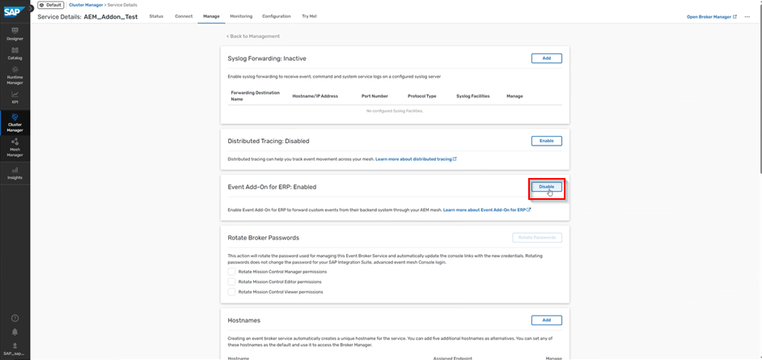
1. Validation Service RFC Destination
Create an HTTP RFC destination (SM59, type G) pointing to the AEM validation service endpoint. This is used for OAuth token retrieval.
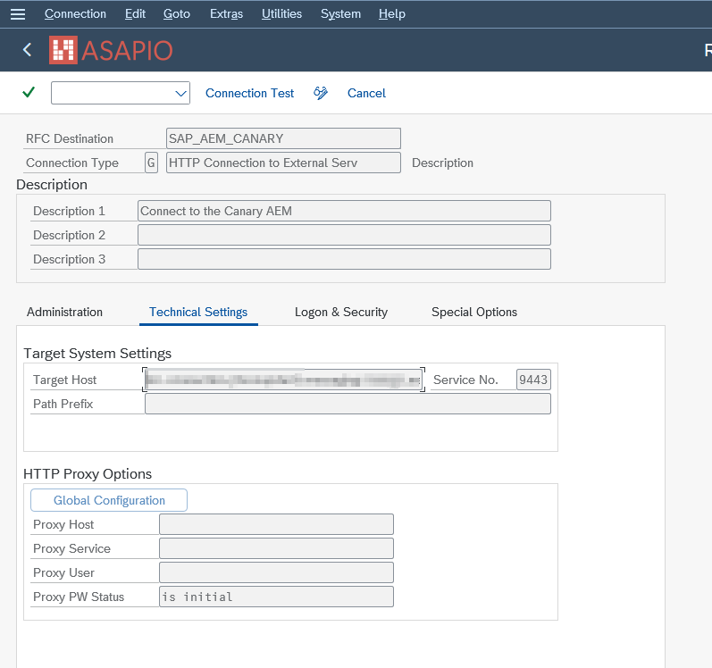
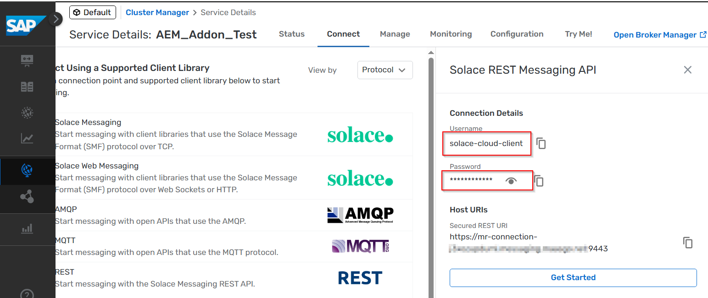
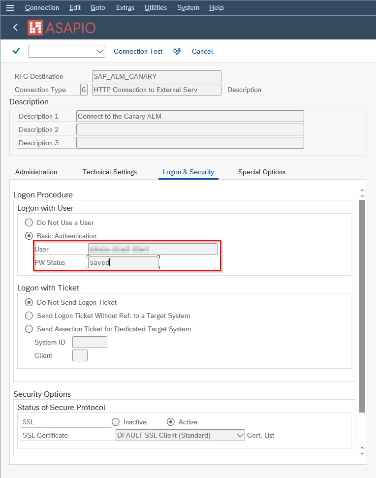
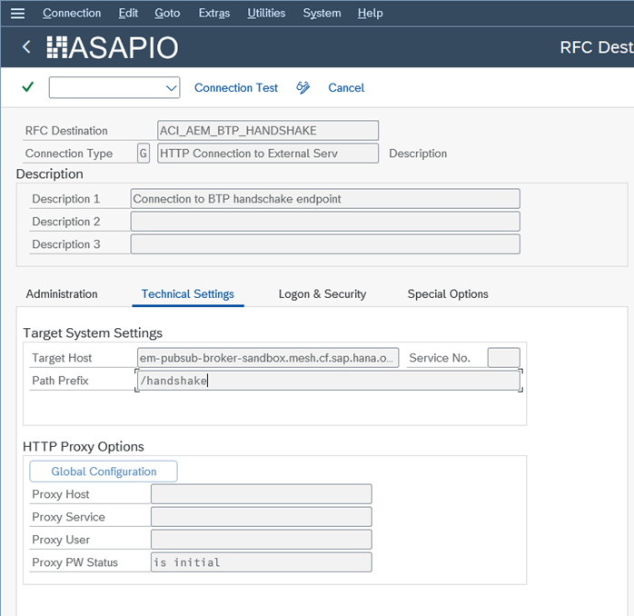
2. Token RFC Destination
Create a second RFC destination for the OAuth token endpoint if using OAuth 2.0 client credentials authentication.
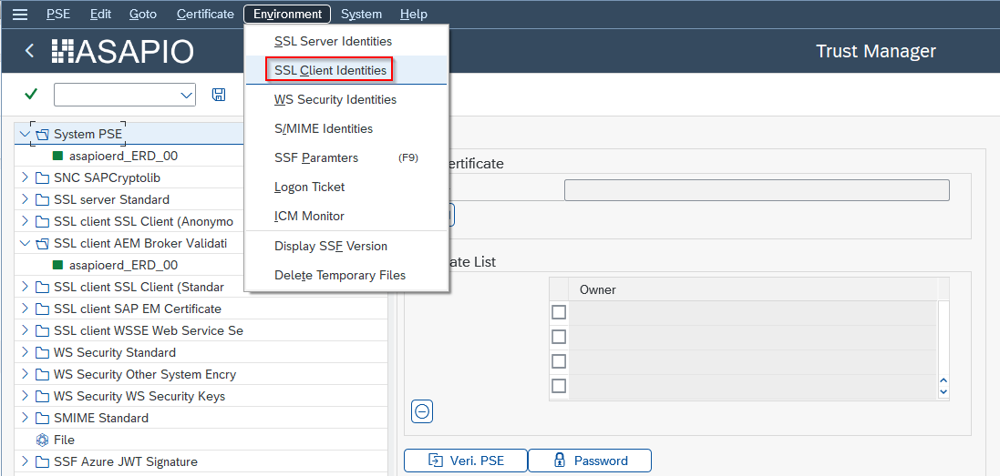
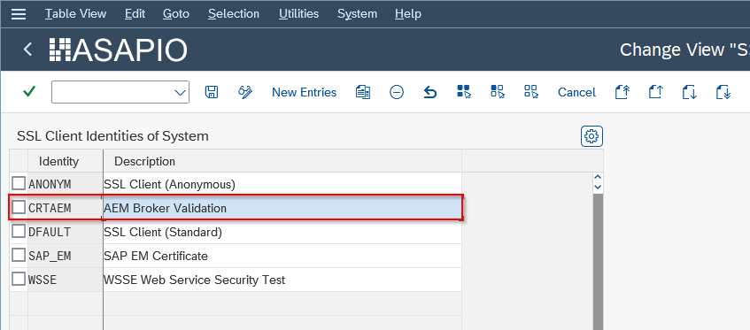
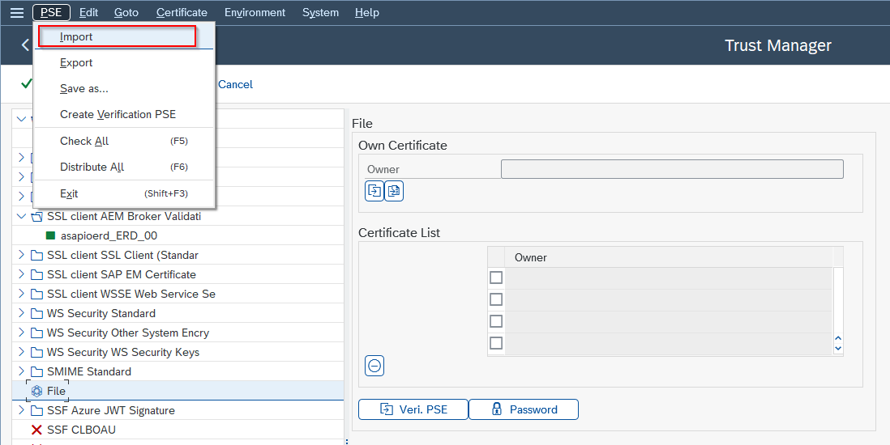
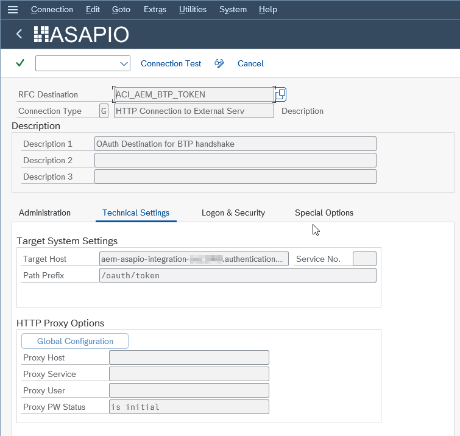
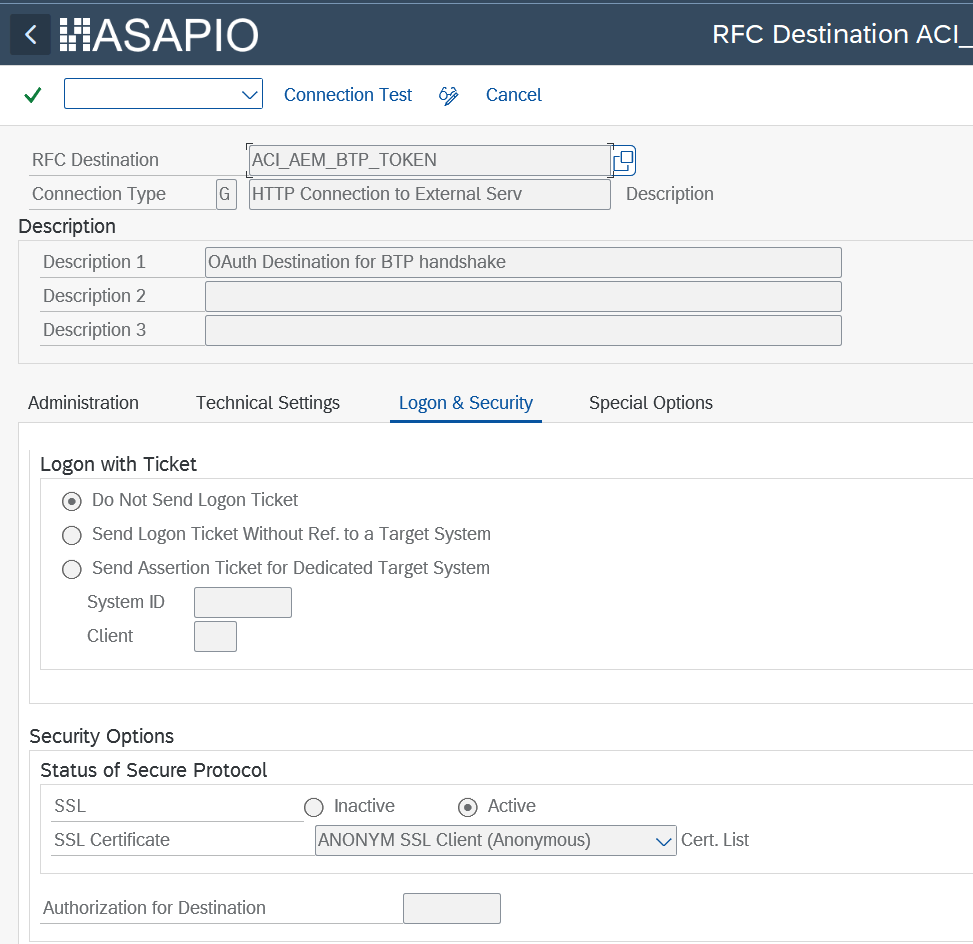
3. Validation Service Cloud Instance
In /ASADEV/ACI_SETTINGS, create a cloud instance for the validation service. Configure the following default values:
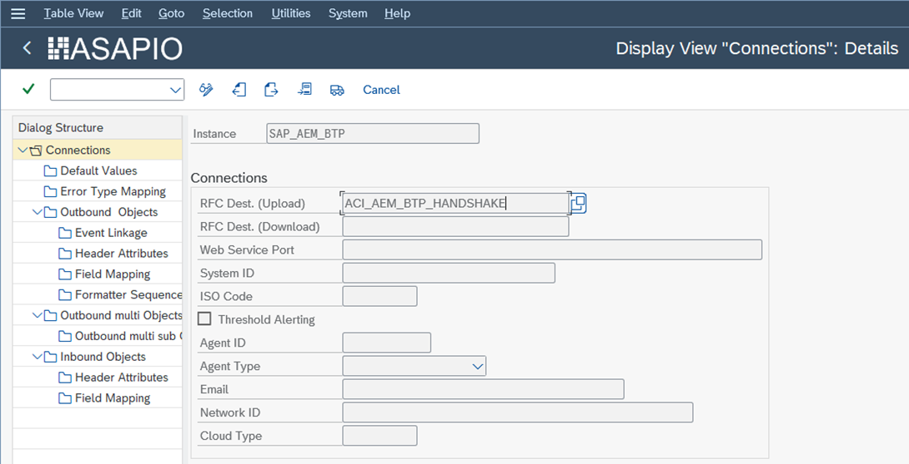
| Default Value Key | Value | Description |
|---|---|---|
ACI_CLIENT_ID | Your OAuth Client ID | Client ID from the BTP service key |
ACI_TOKEN_DESTINATION | Token RFC destination name | RFC destination for the OAuth token endpoint |
AUTH_TYPE | CERTIFICATE or OAUTH | Certificate-based or OAuth 2.0 with client secret |
For certificate-based authentication: import the p12 certificate into STRUST (SSL Client Identity). On older ABAP releases, use sapgenpse import_p12 to import the certificate before using STRUST.
4. AEM RFC Destination
Create an RFC destination pointing to your AEM broker's REST messaging endpoint (available in the AEM Cluster Manager Connect tab).
5. AEM Cloud Instance
Create the main AEM cloud instance with Cloud Type SAP_AEM. Use basic authentication (username and password from the AEM Cluster Manager) in the logon & security tab of the RFC destination.
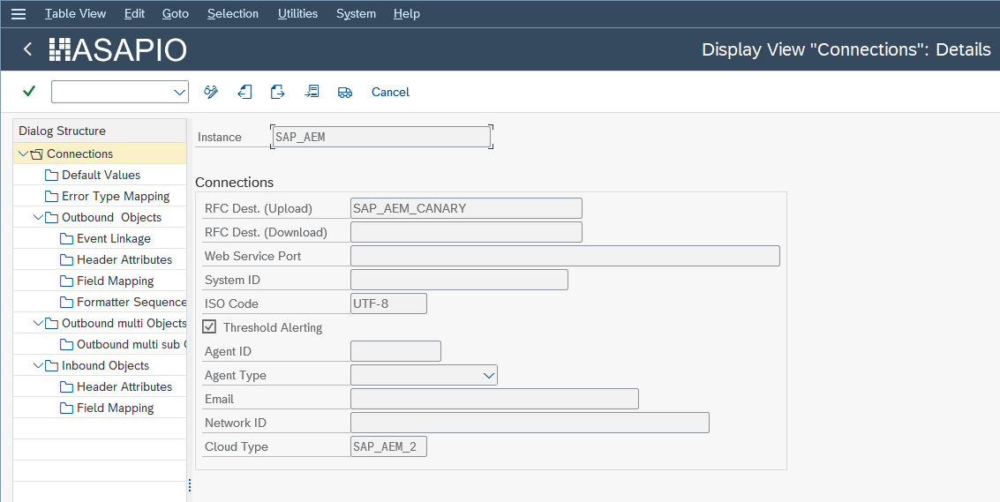
Set the AUTH_INSTANCE default value to point to the validation service instance created in step 3.
Outbound interface configuration follows the standard outbound messaging setup. See Outbound Messaging for details; use the AEM-specific function modules and header attributes listed below.
Dynamic Topics
AEM supports dynamic topic routing, allowing the topic name to be built from event payload fields. Configure this in the Field Mapping of the outbound object by mapping source fields to URL path segments of the topic string. This works the same as the Solace PubSub+ dynamic topic feature.
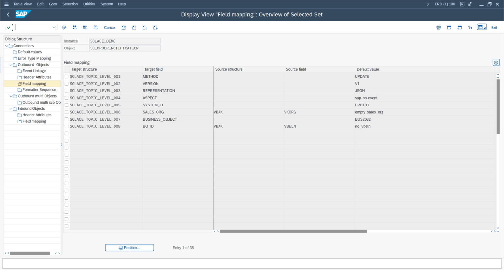
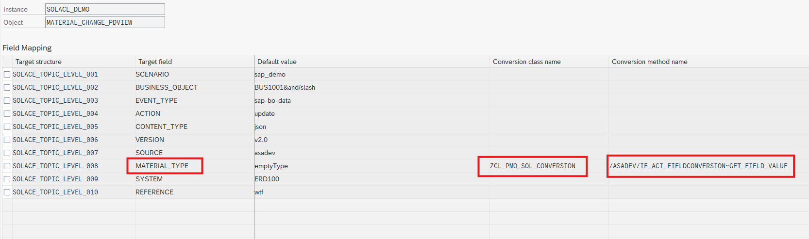
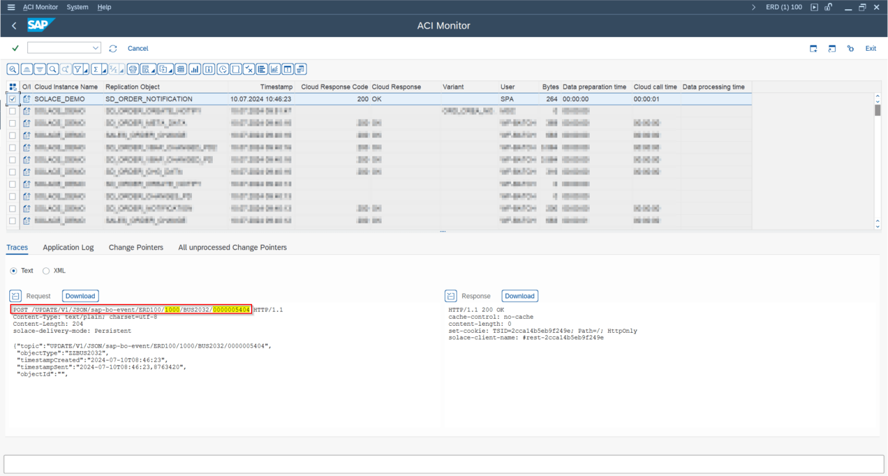
Function Modules
| Function Module | Type | Payload Design | Purpose |
|---|---|---|---|
/ASADEV/ACI_GEN_PDVIEW_EXTRACT | Extraction | Yes | Recommended extractor for Payload Design based interfaces |
/ASADEV/ACI_GEN_VIEW_FORM_CB | Format | Yes | Recommended standard formatter |
/ASADEV/ACI_GEN_FORM_CE_CB_AEM | Format | Yes | Standard formatter plus CloudEvents header wrapping |
/ASADEV/ACI_IDOC_FORMATTER_AEM | Format | No | Formatter for IDoc conversions |
/ASADEV/ACI_GEN_VIEWEXT_AEM | Extraction | No | Extractor for DB view based interfaces |
/ASADEV/ACI_GEN_NOTIFY_AEM | Extraction / Format | No | Extractor for notification events |
/ASADEV/ACI_GEN_META_AEM | Extraction | No | Example extractor (metadata) |
/ASADEV/ACI_GEN_DATA_AEM | Extraction | No | Example extractor (data) |
/ASADEV/ACI_GEN_CHANGES_AEM | Extraction | No | Example extractor (changes) |
/ASADEV/ACI_GEN_VIEWFRM_AEM | Format | Yes | Deprecated formatter – use /ASADEV/ACI_GEN_VIEW_FORM_CB instead |
/ASADEV/ACI_GEN_RH_AEM | Response Handler | – | Mandatory response handler for AEM |
Header Attributes
| Header Attribute | Value / Description |
|---|---|
SOLACE_CALL_METHOD | POST |
SOLACE_CONT_TYPE | Content type (e.g. application/json) |
SOLACE_DELIV_MODE | Persistent (recommended) |
SOLACE_DMQ_ELIGIBLE | true – enables dead message queue |
SOLACE_TIME_TO_LIVE | Message TTL in milliseconds |
SOLACE_TOPIC | Topic name or template |